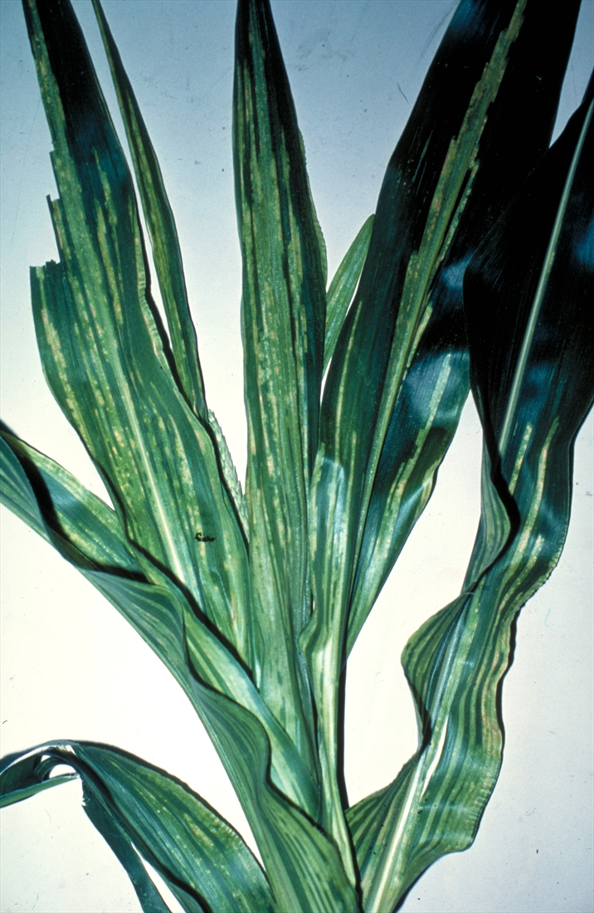
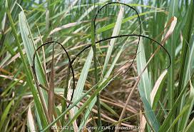
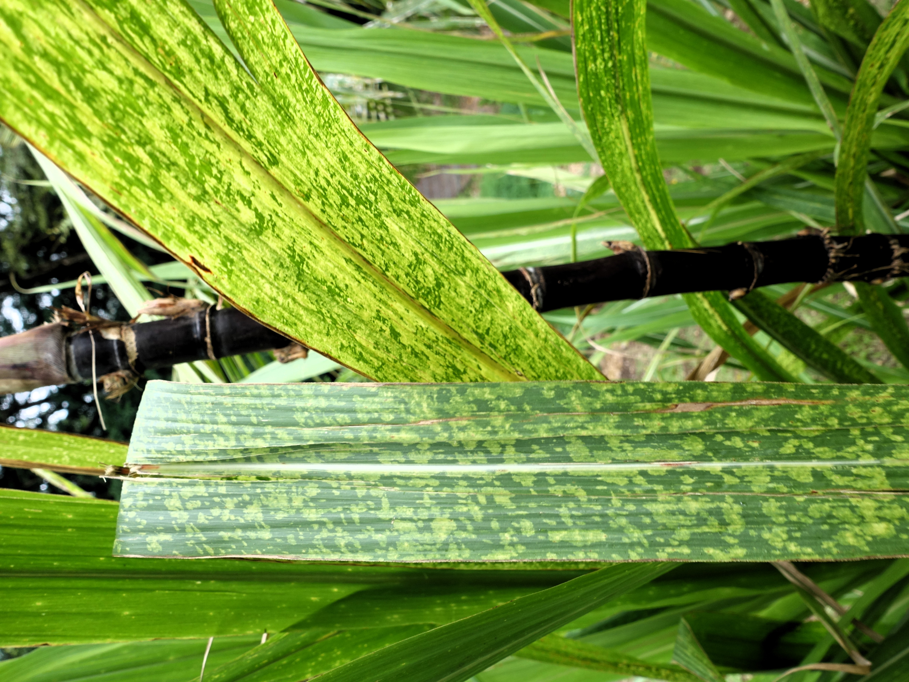
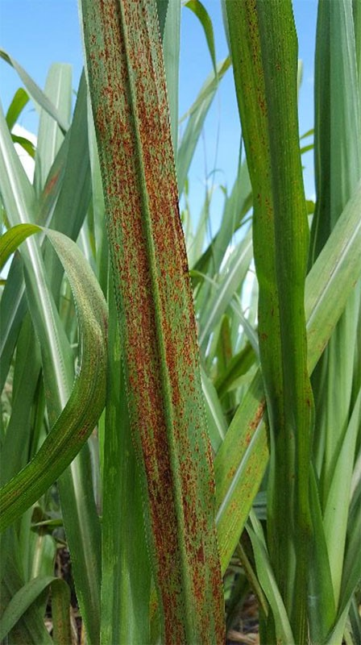

9:41
Plant Patrol
Smart Sugarcane Disease Detection
and Monitoring
and Monitoring
Nasugbu, Batangas
v1.0.0 · Capstone Prototype
Sign In
CaneGuard Mobile
Welcome to CaneGuard
Sign in to continue scanning, save reports, and sync records with MAO.
Remember me
Don't have an account?
Prototype only — account validation is simulated.
Reset Password
Account Recovery
Forgot your password?
Enter your email and we will send a mock reset instruction for this static prototype.
Create Account
CaneGuard Mobile
Create your account
Register to start scanning sugarcane and submitting field reports.
Already have an account?
Prototype only — registration is simulated.
SCAN
Detect Possible Diseases
Take or upload a photo of your sugarcane. Plant Patrol helps identify possible diseases quickly, even in the field.
CHECK
Validate with Symptoms
Answer simple questions about what you see. Symptom checks improve confidence in possible disease detection.
SYNC
Works Offline Too
Save reports locally and sync later when connected. This supports fieldwork in low-signal areas.
Who are you?
Select your role to get the right experience. This prototype supports assisted use by agricultural personnel.
FR
Farmer
Scan sugarcane plants and save reports from your farm.
FP
Field Personnel
Assist farmers and submit reports to the Agriculture Office.
You can change your role later in profile settings.
Magandang umaga,
Nikko Selwyn
Online
Location: Brgy. Cogunan, Nasugbu, Batangas
Quick Actions
2 unsent reports
Will sync automatically when online. View queue
Common Diseases - Photo Examples

Downy Mildew
White fuzz, yellow stripes

Sugarcane Smut
Black whip-like growth

Mosaic Disease
Patchy green-yellow leaves

Sugarcane Rust
Brown-orange leaf spots
Recent Activity
Scan - Brgy. Wawa
Jul 12, 2025 · 10:23 AM
Scan - Brgy. Cogunan
Jul 10, 2025 · 3:45 PM
Photo Guide
Take a Clear Sugarcane Photo
Keep the plant clear, bright, and close enough before scanning.
Do This
• Use bright natural light.
• Focus on the affected leaf or stalk.
• Hold the phone about 20-30 cm from the plant.
• Make the affected area fill most of the photo.
Avoid This
• Dark or shadowy photos.
• Blurry photos.
• Photos taken too far away.
Tip: You can upload an existing photo from your gallery if you already took one.
Capture Photo
Photo not ready
Make sure the image is clear, bright, and close enough.
CAMERA
Camera preview
(mock display)
LIVE PREVIEW
Sugarcane leaf — preview
Uploading photo
0%
⚠️ Photo may be too dark. Try better lighting.
Supported: JPG, PNG · Max 10MB
Manual Symptom Check
Ano ang nakikita sa tubo? Select all that apply. This manual check will be shown separately from the AI prediction for comparison.
ST
Yellow or white stripes
Guhit sa dahon from base to tip
SM
Black whip-like growth
Itim na parang buntot sa dulo ng tubo
MO
Patchy green and yellow leaves
Hindi pantay na kulay sa dahon
RU
Rust-colored spots
Maliliit na brown-orange spots sa dahon
DR
Drying or unusual discoloration
Nanunuyo or nag-iiba ang kulay
OK
None of the above
Mukhang healthy or hindi sigurado
ℹ️ These answers do not change the AI prediction. They help the farmer and MAO compare what the photo model says with what was seen in the field.
Select at least one symptom to continue
Analyzing your photo…
Checking photo quality and possible disease signs.
The AI prediction is not shown yet.
The AI prediction is not shown yet.
Processing…
Offline mode: results will use local analysis
Photo Needs Review
Needs review
AI photo confidence is low
The photo may be affected by lighting, blur, or distance. Before showing the AI guess, you can answer a few simple symptom questions.
Why ask this?
The manual symptom check is for comparison only. It will not be merged with the AI prediction, so farmers and MAO staff can see where the two agree or differ.
Prediction Result
AI Prediction
Sugarcane Smut
Photo confidence: Low to moderate · 58%
Photo Signs Used by AI
•Dark formation visible near cane tip
•Some leaf drying visible in photo
•Image quality needs field confirmation
Manual Symptom Check Result
Not completed
No manual symptom check was recorded. The AI prediction is shown by itself.
⚠️ Important Notice
This is an AI prediction only, not a confirmed diagnosis. Manual answers are shown separately for comparison. Please consult an agricultural technician before taking major action.
Recommended Actions
Recommendations come from the MAO guideline library and can be updated by an admin when local advice changes.
High Urgency - Immediate Attention Needed
High
Sugarcane Smut spreads quickly. Isolate affected plants now.
Step-by-step Actions
1
Separate affected stalks
Alisin at ibalot ang tubo na may itim na whip growth. Huwag iwan sa field.
2
Do not use cuttings
Avoid using seed canes from affected areas to prevent spreading the disease.
3
Ask for field checking
Tumawag sa Municipal Agriculture Office or field technician para ma-check sa mismong taniman.
4
Submit a report
Save and submit this detection to help the MAO track disease spread in Nasugbu.
MAO Contact — Nasugbu
Municipal Agriculture Office
Brgy. Poblacion, Nasugbu, Batangas
Tel: (043) 416-XXXX
Save Report
AI Prediction Summary
Sugarcane Smut
AI Prediction
Jul 12, 2025 · 10:23 AM
Location
SAVE
Save Locally
No internet needed
SYNC
Submit / Queue
Sync to MAO later
✅
Report Saved!
Your report has been added to the sync queue. It will be submitted to the MAO when you're online.
Reports
Disease Summary
18
Total Reports
11
AI Predictions
5
Healthy Scans
2
Pending Sync
By Disease Type
Sugarcane Smut7 cases
Downy Mildew3 cases
Mosaic Disease1 case
Sync Status
2 reports unsent
Saved locally · Will sync when online
✅ 16 reports synced
Last synced: Jul 12, 2025 · 11:04 AM
Recent Submissions
Scan — Brgy. Wawa
Jul 12, 2025 · 10:23 AM
Queued
Scan — Brgy. Bilaran
Jul 5, 2025 · 1:12 PM
Queued
Scan — Brgy. Cogunan
Jul 10, 2025 · 3:45 PM
Sent
Sync Queue
Currently offline — reports saved locally
2 reports waiting
Scan — Brgy. Wawa
Queued
Possible Smut · Jul 12, 2025 · 10:23 AM
Scan — Brgy. Cogunan
Queued
Possible Rust · Jul 10, 2025 · 2:14 PM
Reports sync automatically when internet is restored.
Your data is safe on this device.
Your data is safe on this device.
My Records
Jul 2025
Brgy. Wawa
Jul 12, 2025 · 10:23 AM
QueuedAwaiting sync
Brgy. Cogunan
Jul 10, 2025 · 3:45 PM
SentSynced to MAO
Brgy. Mataas na Lupa
Jul 8, 2025 · 8:05 AM
SentReviewed by MAO
Brgy. Bilaran
Jul 5, 2025 · 1:12 PM
QueuedAwaiting sync
⌕
No matching records
Try another keyword or switch to a different filter.
Record Detail
Sugarcane photo - Brgy. Wawa
Possible Smut
AI Prediction Info
| Date | Jul 12, 2025 · 10:23 AM |
| Barangay | Brgy. Wawa |
| Farmer | Ronel Lance |
| Status | Queued |
| Submitted by | Charish Bea |
Manual Symptom Check Result
Shown separately from the AI prediction for comparison.
✓Black whip-like growth
✓Drying or unusual discoloration
Notes
North side of the field, row 3. Several affected stalks observed.
Help & FAQ
How to Take a Good Photo
Hold your phone 20–30 cm from the plant in good natural light. Focus on the affected leaf or stalk. Avoid shadows and blurry shots.
Frequently Asked Questions
What does "AI Prediction" mean?
▾It means the app found photo signs that may match a disease. It is not a confirmed diagnosis. The manual symptom check is shown separately so farmers and technicians can compare.
Can I use this app without internet?
▾Yes. Scans and records are saved locally. Reports will be queued and submitted to the MAO automatically once you reconnect.
My photo was rejected. What should I do?
▾Try retaking the photo in better lighting. Make sure the affected area fills most of the frame. Avoid blurry or dark images.
Disease Glossary
Downy Mildew
Caused by Peronosclerospora sacchari. Shows white downy growth on underside of leaves, yellow stripes on top surface.
Sugarcane Smut
Caused by Sporisorium scitamineum. Infected stalks produce a black whip-like structure. Spreads via infected seed canes.
Mosaic Disease
Caused by Sugarcane mosaic virus (SCMV). Creates alternating green and yellow patches on leaves. Spread by aphids.
Sugarcane Rust
Caused by Puccinia melanocephala. Shows rust-colored or brown pustules on leaves, mainly in cool and humid conditions.
Need more help?
Contact the Municipal Agriculture Office of Nasugbu, Batangas at (043) 416-XXXX or visit Brgy. Poblacion.
Settings
Display & Accessibility
Language / Wika
English / Filipino
Text Size
Normal
High Contrast Mode
Easier to read outdoors
Notifications
Sync Alerts
Notify when reports are sent
MAO Advisories
Disease alerts from the Agriculture Office
Account & Security
Profile Settings
Edit name, email, password, and contact details
About
App NameCaneGuard
Versionv1.0.0-prototype
ProjectCaneGuard Capstone
LocationNasugbu, Batangas
⚠️ This is a static prototype for capstone presentation only. No real ML model, backend, or data transmission is active.
My Profile
Account Information
Change Password
Delete Record?
This action cannot be undone. Are you sure you want to delete this record?
Sugarcane Smut
Quick disease guide
Visible symptoms
Short description
Possible action
Step 1 of 5
Start Scan
Use Start Scan to begin the photo guide, camera capture, AI prediction, and manual symptom comparison.